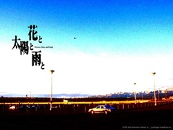
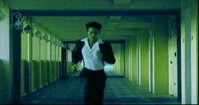
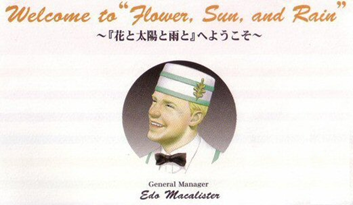
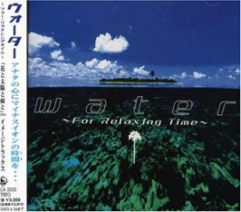

There’s always some sort of event that inspires writing, playing Flower, Sun, and Rain two times in 2021 obviously is the central event for this specific piece of text but there’s something a bit more that happened while playing this game that captivated me.
 Part of why I started writing these reviews in the first place was so I could systematically lay out my thoughts on a page. I don’t feel like I’ll be able to change how someone views these games here frankly, but I just want to have a conversation going because at the end of the day I’d rather have somewhere to think about an obscure video game out in an ocean of thousands of DS games and millions of things to see and experience in this world.
Flower, Sun, and Rain is a sequel to The Silver Case (which is a part of what is known as the “ Kill the Past '' series), and if you’re going into this (as a few unfortunate individuals back in 2009 did) I don’t recommend it frankly. The game stands on its own in a few phenomenal ways as a framework for Suda51’s later titles, but if there’s one thing that the Kill The Past series is built on its having a narrative with many layers that almost entirely acts as its own gameplay as you observe what is happening while your viewpoint shifts with playing the other games or even replaying any of those individual games. Flower, Sun, and Rain is built to not only capitalize on what fans of The Silver Case are searching for with the game being a sequel to it, but also as a spiraling mystery on its own as it tackles the definition of what it means to search and solve.
 The opening cutscene of Flower, Sun, and Rain (for the PlayStation 2 version) has live action footage of a man, our protagonist, running around an island and occasionally being caught up in his thoughts or ignoring a girl that’s with him as he has somewhere to go. This man is Sumio Mondo, if you flip through the manual (or read already online) he’s a searcher so he’s obviously running to go search for something. The excellent music in the opening plays into the idea of FSR possibly being a drama, as if you’re watching the opening of a television show (which I felt The Silver Case also did as well) and that this isn’t just some regular video game to mindlessly play.
Flower, Sun, and Rain presents itself as the journey of Sumio Mondo encountering strange individuals on the island of Lospass after being sent there to find a bomb that threatens to blow up a plane heading for the Lospass airport. Mondo arrived at the island through a highway bridge, and here we are introduced with him telling the player who he is as he’s driving his own car that he named Giggs and let me be honest, as a man who carries around a silver computer briefcase that can open ANYTHING if he has the code for it he’s simple, a standard puzzle video game character. Sumio’s computer briefcase in fact is named Catherine, Sumio’s just the kind of guy to name his tools.
 Sumio was sent to Lospass by the manager of the extravagant Flower, Sun, and Rain hotel, Edo Macalister who feels as if he came from one of those vintage advertisements with his smile even greeting you on the file selection screen. The circumstances of the situation already seem way more ridiculous than what should be realistic, but hey this is a video game and searching justifies a mystery that justifies the existence of this game so who cares right?
The flow of the gameplay itself in fact, is about following a guidebook that gives you problems for opening stuff to progress the story and then walking around, something that is so barebones that I’ve seen plenty of people pretty much run away from this game which would be understandable if the game wasn’t as short (and amazing) as it is.
The guidebook oozes with unrelenting joy for graphic designing and this should be no shocker since The Silver Case took pride in making small details like websites and UI borders stylish as hell. The page layouts are unique but unified in being relevant sections for the puzzles and overall encapsulation of what Lospass island and Flower, Sun, and Rain is about.
That’s a bit why this is one of my favorite games, there’s a taste of gameplay that’s interactive but ultimately there’s a reason for all of this, from each chapter we meet different characters that play off Mondo and unravel what’s going on revealing that there are mysteries everywhere even in this paradise away from what seems like the world itself. It’s the kind of gameplay that should appeal to the crowd that just walks around in empty maps for some reason but then again those people seem to draw themselves towards watching videos about that rather than being there.
 The soundtrack box art even alludes to this feeling, it’s isolation that’s filled with what seems like nothing but that could be better than the dangers and stresses of the world away from Lospass island. Flower, Sun, and Rain has a soundtrack that’s a compilation of known classical music that seals the island in its timeless feeling that also encapsulates a feeling of excitement fitting for a puzzle game, it’s phenomenal.
I’m being pretty straightforward with this game right now just to avoid spoilers here, but the dialogue can shift from downright hilarious to confusingly vague and while I had to play the game through the filter of it being localized to English for the DS (where apparently had some localization issues with being delayed), as a set piece in the Kill the Past series and on its own there’s definitely an awareness of the tone so I definitely think the English localization team knocked it out of the park (especially for 2009) even if it’s so direct that it makes all the callbacks to The Silver Case confusing to newcomers.
Why is this paradise? Isn’t a video game supposed to be fun with raw violence, guns, rainbow blocks that form a rectangle, or multiple choices that let you decide whether to become good or evil? Observe/play The Silver Case and Flower, Sun, and Rain and see for yourself, paradise is an exit and I’m not going to say what the exit is for, that’s what mysteries are all about anyways.